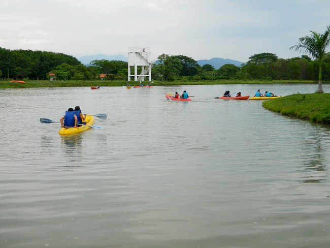
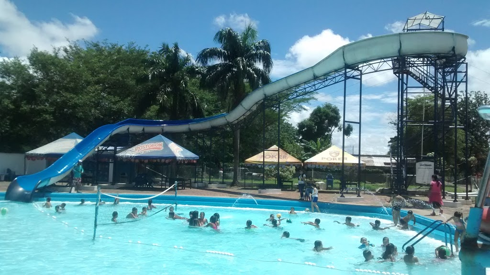
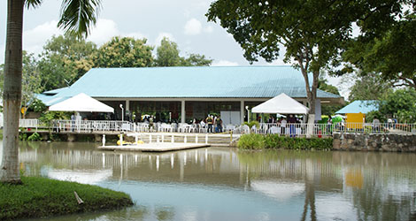

Agroparque Mararay

Agroparque Mararay es un centro turístico, donde se puede disfrutar de diferentes actividades al aire
libre, servicio de restaurante, piscinas, avistamiento de diferentes especies de la fauna llanera, un lugar para compartir con familia y amigos con: Kayack, Recorrido a Caballo, Piscina, Ciclas Acuáticas, Avistamiento de Fauna.
Ubicación: Yopal Casanare km 5 vía matepantano
Doña Bárbara

Que tal probar unas ricas arepas rellenas de queso o quizás de disfrutar una refrescante bebida, doña Bárbara es un lugar muy reconocido de Yopal por ofrecer exquisitos platos a la carta, bebidas naturales, licores, atracciones para los niños y una maravillosa vista al garcero, es un lugar amplio, cómodo y al aire libre, donde puedes salir de lo cotidiano. Exquisitos platos a la carta y platos tradicionales, Espacios al aire libre para compartir en familia, Deliciosas arepas rellenas de queso y diversos postres, Una espectacular vista al garcero.
Ubicación: Kilómetro 8, vía Sirivana, junto al Garcero de Yopal
Centro Recreacional Atajo Paisa Santandereano
Si buscas un lugar donde puedas divertirte en familia, el Atajo Paisa es el indicado, piscinas para niños y adultos, servicio de restaurante, zona familiar y mucho más.
Ubicación: kilómetro 9 vía Sirivana Yopal
Parque Acuático Nacua
Descripción:
Parque acuático Nacua, es lugar donde puedes ir a compartir en familia o con amigos, varias zonas de piscina y diferentes locales de comidas a disposición de cada una de las personas que se acerquen a este espectacular lugar con Zona para Niños,Diversos Toboganes,Rio Lento,Piscina de Olas,Zonas de Comidas
Ubicación:Cl. 24 No. 39-78, Yopal, Casanare
Estadero Palo Grande

Descripción
Un lugar donde puedes disfrutar de piscina, amplias zonas verdes, zona de camping, juegos autóctonos de la región, el agua natural de una pequeña quebrada que pasa por la zona y mucho más.
Ubicación: Km 2.5 vía palomas
Centro Recreacional Comfacasanare

Este centro tiene servicios en los cuales las personas pueden disfrutar de diferentes escenarios tanto deportivo, como familiares e interactivos, lugares donde pueden ir con amigos y familiares que pertenezcan a la línea de las cajas de compensación familiar a nivel nacional.
Ubicación: Vía a Sirivana, Yopal, Casanare
Servicos:
- Piscina
- Cancha de fútbol
- Salón de Eventos
- Zona de Kayak
- Zona Familiar
- Canchas de Voleibol
- Canchas de Tennis